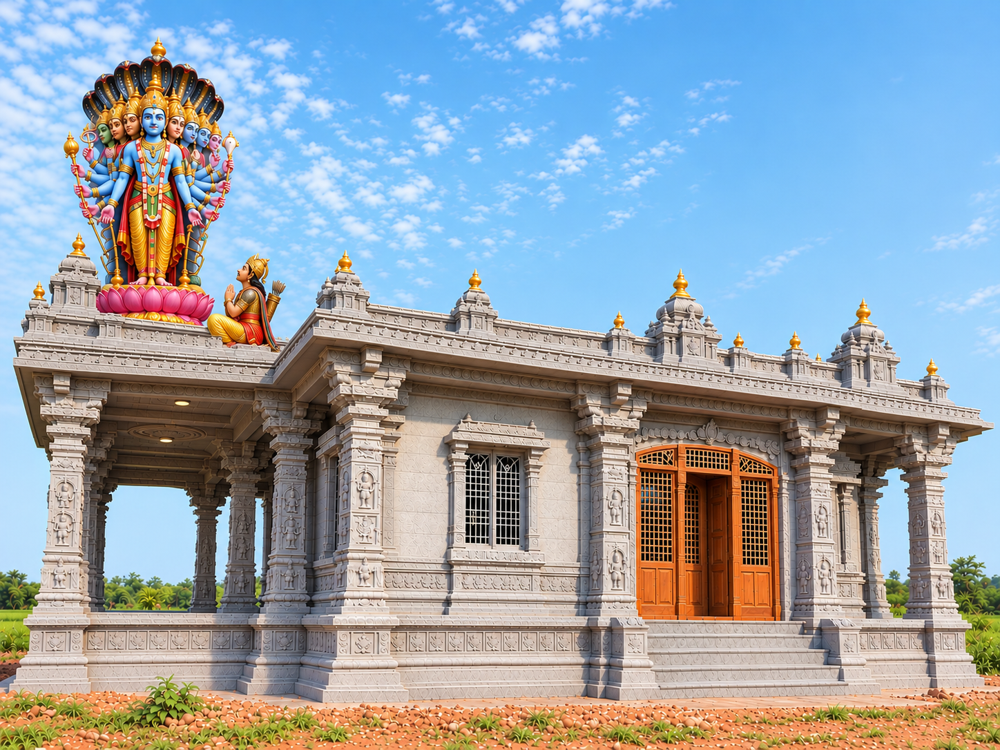
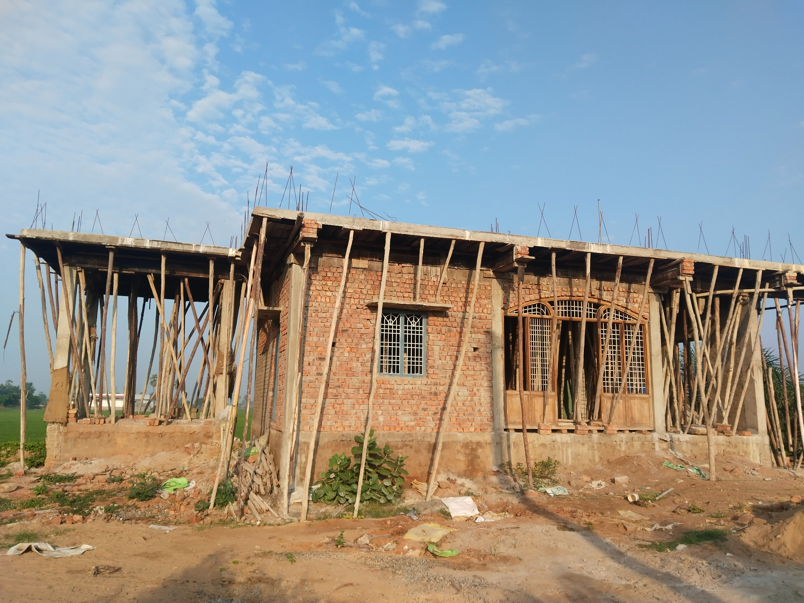
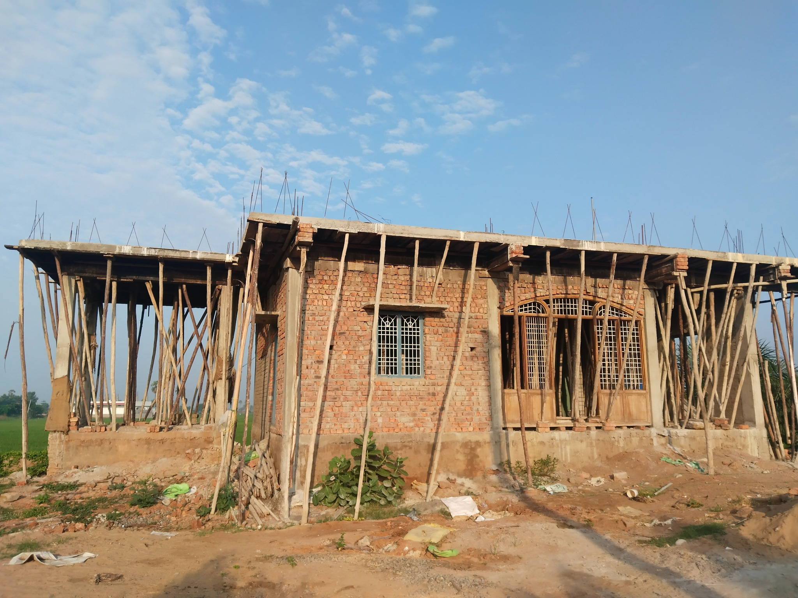

Lalitha Devi
Peetham
A sacred spiritual center dedicated to the Divine Mother — envisioned as a place of devotion, pooja, seva and divine blessings.
4:00 PM – 8:30 PM
Kumkum Archana
Gollaprolu, Kakinada District, AP – 533445
+91 84668 87604
The Vision of Lalita Peetham
A glimpse of the proposed Ashram design. The actual structure is currently being built.

Our Sacred Vision
The proposed Ashram is envisioned as a beautiful spiritual space for Sri Lalitha Devi worship, daily poojas, festivals and community seva.
This image is a concept/design reference and is not a photograph of the completed Ashram.
See Current ProgressAbout the Ashram
Sri Vignanbrahmananda Ashram (Lalita Peetham) is being developed as a sacred place for devotion, spiritual practice and service.
Sacred Space
A dedicated place for worship and spiritual practice.
Lalitha Devi
Devotion centered on the Divine Mother and Her grace.
Poojas & Sevas
Daily worship, archana and devotional activities.
Community
A place where devotees can come together in seva.
Ashram Construction Progress
We are grateful to every devotee who supports this sacred project.

Current Construction
Photograph from the ongoing Ashram construction.

Building Progress
Another view showing the present stage of construction.
Poojas & Sevas
Participate in sacred activities and support the development of the Peetham.
Kumkum Archana
Offer your prayers at the feet of the Divine Mother.
Nitya Pooja
Daily worship offered with devotion.
Lalitha Sahasranama
Devotional recitation and meditation.
Festivals & Events
Festival dates and detailed programs can be added here as they are finalized.
Lalitha Panchami
Special Pooja & Archana
Guru Purnima
Guru Pooja & Blessings
Varalakshmi Vratam
Special Alankaram & Pooja
Sharannavaratri
Devi Mahotsavam
Gallery
Proposed design and real construction progress — more photographs can be added as the project develops.
Live Darshan
Join the official Sri Vignanbrahmananda Ashram (Lalita Peetham) YouTube channel for live darshan, upcoming streams and devotional videos.
Official YouTube Live Darshan
Live broadcasts will appear on the Ashram's YouTube channel when scheduled or started. Open the channel to watch the current live stream or upcoming live events.
Use the button to watch the current stream on YouTube.
Find Us
Locate Sri Vignanbrahmananda Ashram (Lalita Peetham) in Gollaprolu, Kakinada District.
Ashram Location
Door No-18-1-85/1, Jagan Colony Street, Lalitha Nagar, Gollaprolu, Kakinada District, Andhra Pradesh – 533445.
📍 Open in Google MapsThe map uses the Ashram address. Once the official Google Maps pin is created, we can replace this with the exact pin/location.
Contact Us
For pooja, seva, construction support and general enquiries.
Address
Door No-18-1-85/1, Jagan Colony Street, Lalitha Nagar,
Gollaprolu, Kakinada District,
Andhra Pradesh – 533445.
Phone
+91 98495 20134
+91 84668 87604